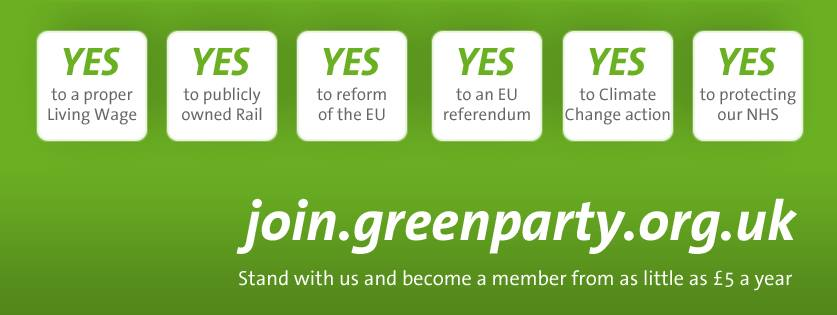

The European Election already seems like a long time ago, and we have obviously been celebrating the election of our first MEP in the South West, Molly Scott Cato. We have achieved our goal and our candidate has been elected, but what will this mean for me in the election next year, and more generally in Bath, given that local elections are happening on the same day?
The results in BaNES were very interesting. We got 16.3%, beating both the Lib Dems and Labour, which is a very decent result. Now consider this - the Somerset NE constituency is generally Conservative, and Euro-sceptic Conservative at that. Their current MP Rees-Mogg has in the past suggested pacts with UKIP. The large Tory and UKIP vote in the BaNES area is very likely to have come from the Somerset NE parliamentary constituency. What this suggests is that in Bath the Green vote was likely to have been at least 20%.
This is great news. While the Lib Dems consider Bath to be their 4th safest seat, their support has crumbled. This isn’t really a surprise nationally, but for it to happen in Bath has probably surprised them.
It’s a perfect storm - long-serving MP Don Foster is not standing again, and the replacement Lib Dem PPC Steve Bradley is considered by many in his party to have been ‘flown in’, with members apparently rather put-out that a local candidate wasn’t chosen. Membership is plummeting, and it appears that votes are too, but who to? Let’s face it, Lib Dems who are frustrated that their party is enabling Tory policy are unlikely to vote Tory. Labour don’t seem to have picked-up the votes, but our vote has ballooned, and membership of the Green Party has risen by a huge 25% in the first five months of 2014 alone.
It is clear that many ex Lib Dem voters are now Green voters. This is understandable. The Lib Dems positioned themselves slightly to the left of the Labour party, but under this government we’ve seen them support the Tory privatisation of the NHS, slashing the commitment to renewables, support fracking, attack the poor and disabled and condemning millions of people to food banks simply to survive. Are these the policies that most Lib Dem voters really wanted? No, and with Labour signed-up to the Coalition austerity spending plans and UKIP taking the ultra-Tory route, we Greens are the only party that represents the ‘small l’ liberalism and environmental awareness of the Bath people.
I am looking forward to the rest of the campaign, and to the election in 2015. I think we’re going to surprise a lot of people.